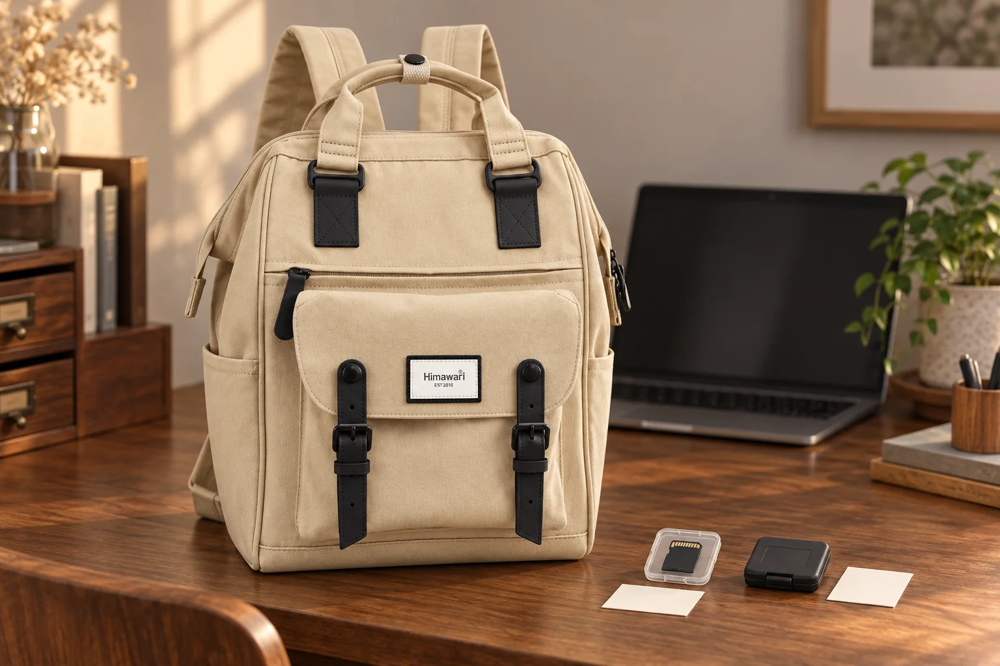
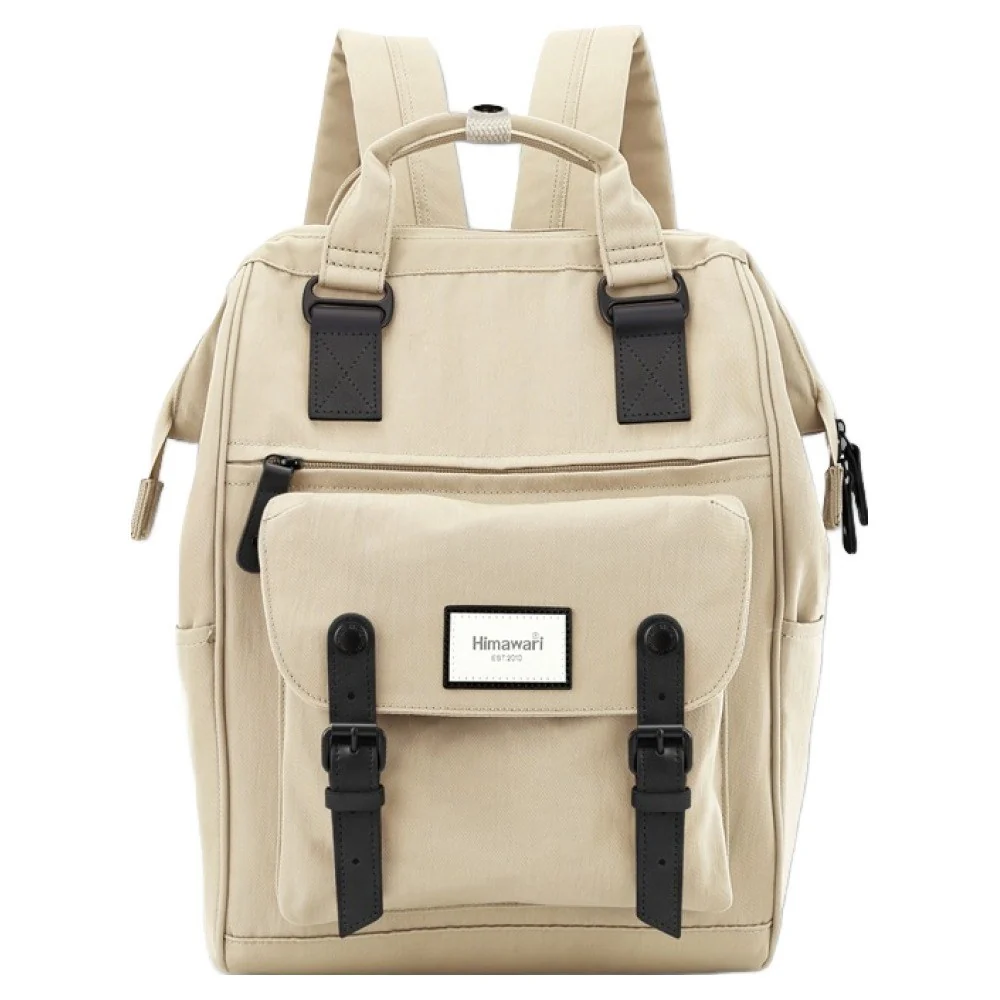

메모리카드에 붙일 이름은 촬영 뒤의 상태

촬영을 마치고 카드를 교체한 뒤 작은 케이스를 열면 겉모양이 같은 카드가 나란히 보입니다. 어느 쪽이 오늘 촬영한 카드인지 바로 읽을 표시가 없다면 내용을 확인해야 합니다. 케이스의 자리를 정하는 일과 파일이 어디까지 정리되었는지 기록하는 일을 연결해두면 현장에서의 교체가 집의 파일 확인으로 이어집니다. 카드를 ‘썼다’와 ‘비었다’ 두 상태로만 부르기 전에 그 사이의 단계를 살펴봅니다.
카메라에서 꺼내는 순간의 확인
카드는 사용하는 카메라의 분리 절차를 따른 뒤 꺼냅니다. 사진이 화면에 보인다는 이유만으로 기록이 끝났다고 판단하지 않습니다. Sony의 카메라 도움말는 접근 표시등이 켜진 동안 카드나 배터리를 빼거나 전원을 끄지 않도록 안내합니다. 표시등 위치와 상태 표시는 기종마다 확인해야 하므로 다른 카메라에서 본 모양을 자기 기기에 그대로 적용하지 않습니다.
교체를 시작하기 전에 케이스를 놓을 자리를 마련하고, 꺼낸 카드가 돌아갈 칸을 확인합니다. 카드를 손에 든 채 가방의 여러 주머니를 찾는 상황을 줄이기 위한 순서입니다. 촬영한 카드를 임시로 다른 물건 위에 올려두기보다 정한 케이스로 옮깁니다. 작은 소품일수록 이동 중에 어디에 두었는지 기억만으로 관리하기 어려울 수 있으므로 한 번의 교체 안에서 자리를 마무리합니다.
카드에 번호가 있다면 그 번호를 기록에 사용할 수 있습니다. 자신이 구별할 이름을 만들 경우에는 케이스와 목록에서 같은 이름을 씁니다. 접점이나 카드 몸체에 임의로 표시하기보다 카드 제조사의 보관 안내를 확인하고 케이스 바깥의 기록을 활용합니다. 번호는 카드의 정체를 구분하고, 촬영 여부와 파일 확인 여부는 바뀌는 상태로 따로 적으면 매번 이름을 바꿀 필요가 없습니다.
케이스의 칸과 상태 기록은 같은 약속으로
촬영한 카드의 자리와 다음 촬영에 사용할 준비를 확인한 카드의 자리를 나눕니다. ‘다음에 쓸 카드’라는 표시는 실제 내용을 확인한 뒤 붙입니다. 겉모양만 보고 빈 카드라고 부르지 않습니다. 같은 케이스에 두 칸이 있다면 어느 칸을 어느 상태로 쓸지 정하고, 여러 케이스라면 바깥에서 읽을 표시를 남깁니다. 다른 사람이 케이스를 함께 사용한다면 그 약속을 공유합니다.
상태의 이름은 자신이 무엇을 했는지 바로 알 수 있는 말로 정합니다. ‘촬영 마침’, ‘파일 옮김’, ‘옮긴 파일 확인’은 서로 다른 단계입니다. 옮겼다는 기록만 보고 다시 사용할 수 있다고 결론 내리기보다 필요한 파일을 확인하는 단계가 남았는지 봅니다. 표시를 너무 세분하면 현장에서 쓰기 번거로울 수 있으므로 실제 작업에 필요한 단계만 고릅니다. 확인하지 않은 상태를 완료로 표시하지 않는 것이 우선입니다.
Himawari No.9018과 함께 촬영 소지품을 챙길 때에는 카드 케이스의 현재 표시부터 읽습니다. 오늘 사용할 준비를 확인한 카드와 지난 촬영의 파일 확인이 남은 카드를 나누고, 케이스가 바뀌어도 같은 이름을 씁니다. 촬영 자리에서는 꺼낸 카드가 돌아갈 칸을 먼저 확인합니다. 귀가 후에도 같은 카드 번호로 기록을 이어갈 수 있도록 케이스와 파일 목록의 이름을 맞춰두면, 작은 카드의 겉모양에 상태를 기억시키지 않아도 됩니다.

집에서 이어지는 파일 확인
귀가 후에는 촬영한 카드의 표시를 읽고 파일을 정리할 순서를 정합니다. 여러 장을 한꺼번에 옮겼다면 어느 카드의 파일을 어느 위치로 옮겼는지 기록합니다. 파일을 옮긴 다음에는 해당 위치에서 필요한 사진과 영상이 열리는지 확인합니다. 복사 동작을 실행했다는 메모와 결과를 확인했다는 메모를 나누면 다음날 어느 단계부터 이어갈지 알 수 있습니다.
예를 들어 카드 A를 ‘촬영 마침’ 칸에 두고 그 파일을 별도 폴더로 복사할 계획이라면, 폴더를 확인한 뒤에만 상태를 갱신하는 방식으로 정할 수 있습니다. 이는 실제 백업 결과를 보여주는 예가 아닙니다. 자신이 쓰는 보관 계획에 필요한 다른 확인도 함께 남깁니다. 폴더 이름을 적어두었다는 사실이나 한 파일이 열렸다는 사실만으로 모든 필요한 데이터의 보관이 끝났다고 확대하지 않습니다.
원본 삭제와 포맷은 파일 확인과 별도의 결정입니다. 위 Sony 도움말은 포맷이 보호된 이미지를 포함한 데이터를 삭제한다고 설명합니다. 따라서 촬영을 마쳤다는 표시만 보고 그 자리에서 포맷할 이유는 없습니다. 자신이 필요한 파일의 보관 상태를 확인하고 사용하는 기기 안내에 따라 재사용을 준비합니다. 상태를 바꾸기 전에 카드 번호와 대상 카드가 맞는지도 다시 봅니다.
다음 촬영 전에는 현재 상태부터
새 촬영에 나가기 전 케이스를 펼쳐 각 카드의 기록을 읽습니다. 지난 촬영의 확인이 남은 카드가 있다면 다음 촬영용과 구별해둡니다. 날짜가 오래되었다는 이유로 빈 카드로 취급하지 않습니다. 카드 수가 늘어나도 같은 상태 이름을 사용하면 목록과 케이스를 대조할 수 있습니다. 표시한 칸을 바꾸었을 때에는 오래된 표시도 함께 고쳐 어느 약속이 현재 적용되는지 분명히 합니다.
촬영 자리에서는 카드의 내용물을 확인할 시간을 길게 갖기 어렵습니다. 출발 전에 정한 케이스와 상태 표시는 그 시간을 미리 집에서 쓰는 방법입니다. 돌아와 파일을 확인한 뒤 표시를 갱신하는 일이 반복되면 다음 외출 때 무엇을 챙길지 바로 읽을 수 있습니다. 같은 모양의 카드가 여러 장 있어도 번호와 상태가 연결되어 있다면 카드의 겉모양에 기억을 맡길 필요가 줄어듭니다.